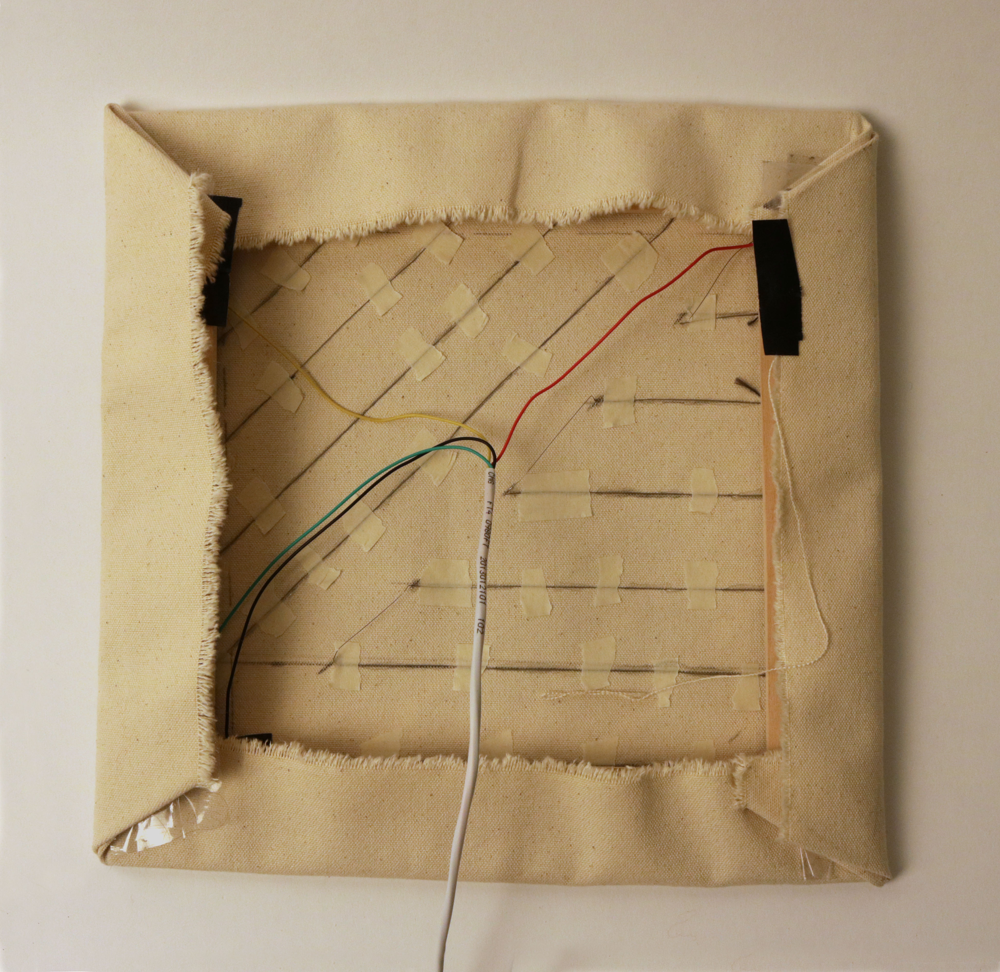
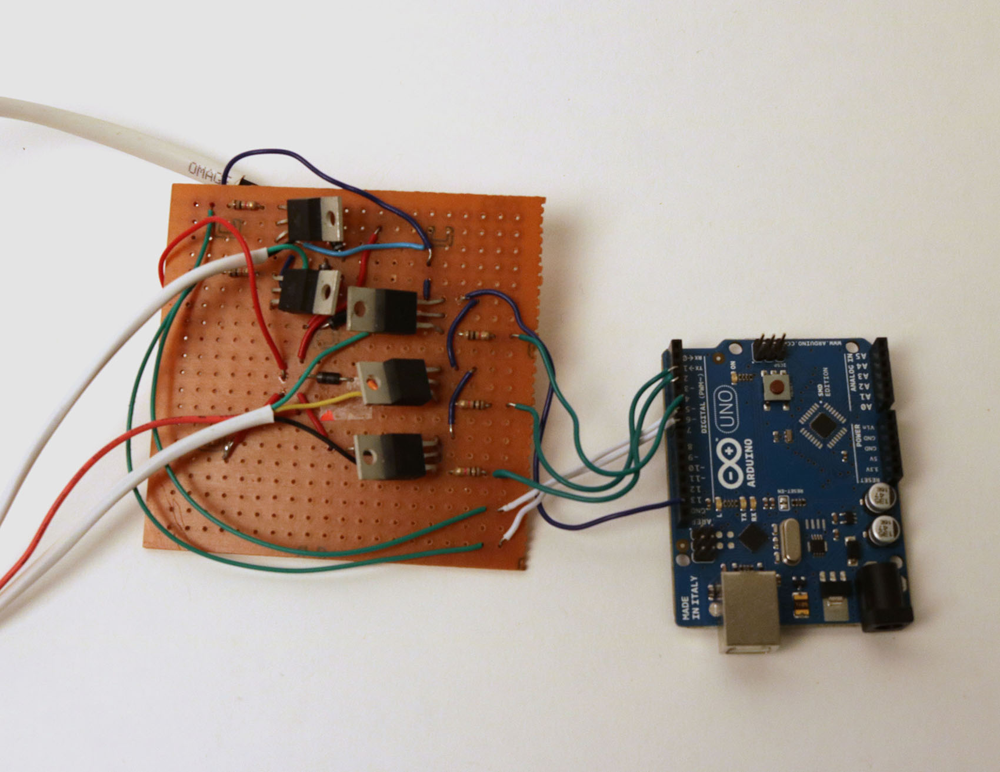
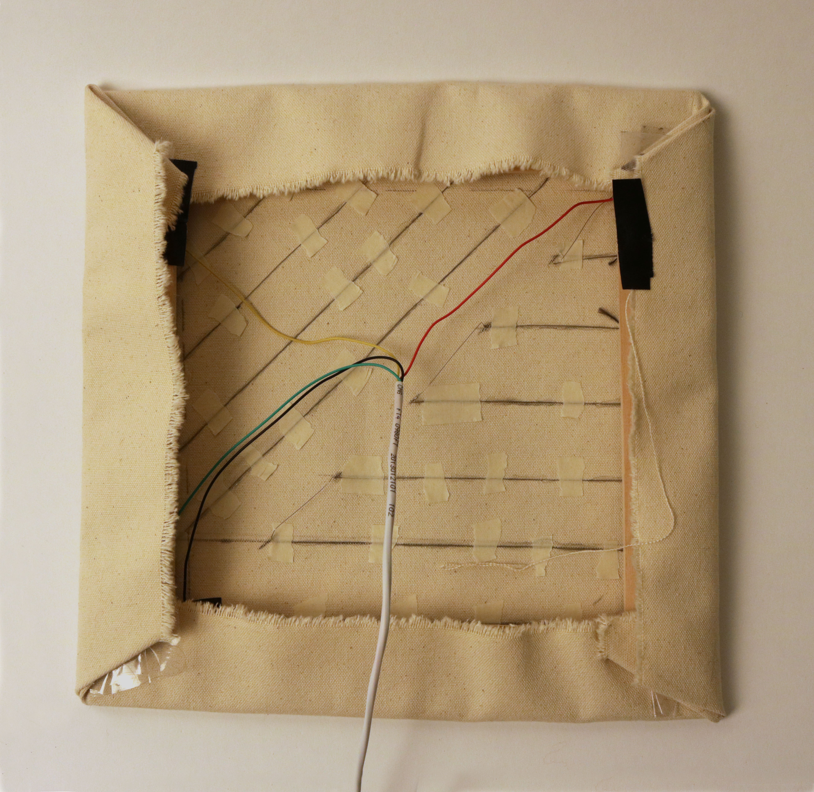
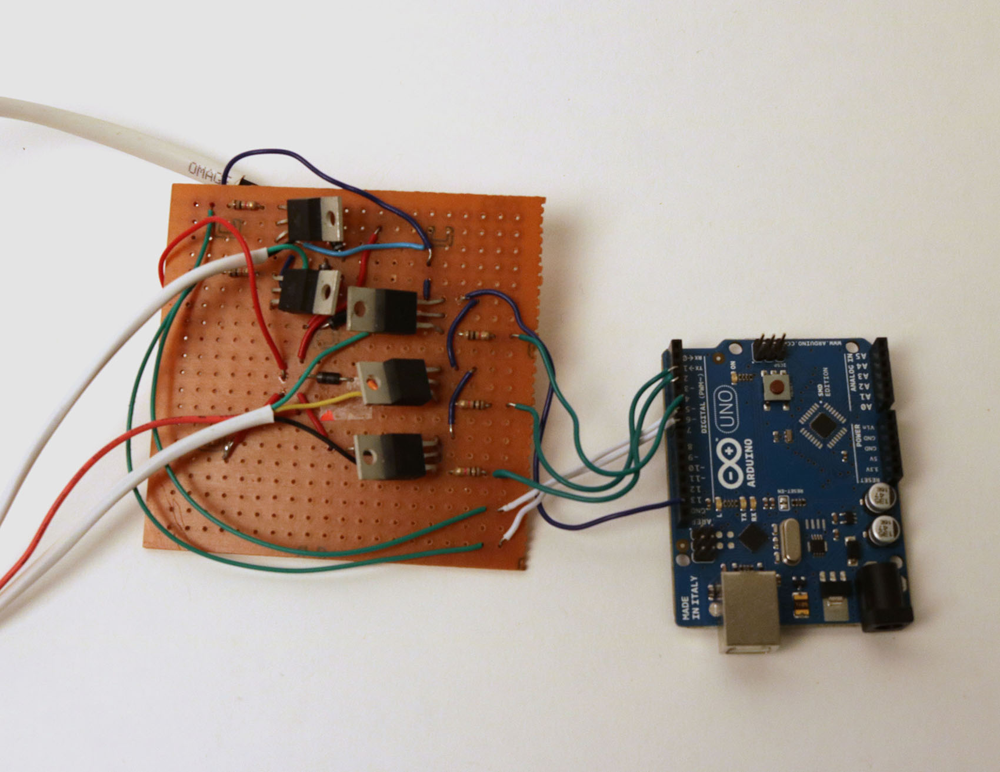

Heat Paint
Heat Paint is the interface for an artificial ambient intelligence.
People walking through the space are observed as objects whose behaviors are continually analyzed,
categorized, and used to build a model of the world within the framework of its own "brain."
When viewing this piece, one is observing an observation of oneself—an infinite
feedback loop of perception and cognition.

 


